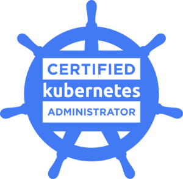

Сертификация Kubernetes Administrator
Экзаменационные темы
|
 |
Storage - 20%
- Understand storage classes, persistent volumes
- Understand volume mode, access modes and reclaim policies for volumes
- Understand persistent volume claims primitive
- Know how to configure applications with persistent storage
Troubleshooting - 30%
- Evaluate cluster and node logging
- Understand how to monitor applications
- Manage container stdout & stderr logs
- Troubleshoot application failure
- Troubleshoot cluster component failure
- Troubleshoot networking
Workloads & Scheduling - 15%
- Understand deployments and how to perform rolling update and rollbacks
- Use ConfigMaps and Secrets to configure applications
- Know how to scale applications
- Understand the primitives used to create robust, self-healing, application deployments
- Understand how resource limits can affect Pod scheduling
- Awareness of manifest management and common templating tools
Cluster Architecture, Installation & Configuration - 25%
- Manage role based access control (RBAC)
- Use Kubeadm to install a basic cluster
- Manage a highly-available Kubernetes cluster
- Provision underlying infrastructure to deploy a Kubernetes cluster
- Perform a version upgrade on a Kubernetes cluster using Kubeadm
- Implement etcd backup and restore
Services & Networking - 20%
- Understand host networking configuration on the cluster nodes
- Understand connectivity between Pods
- Understand ClusterIP, NodePort, LoadBalancer service types and endpoints
- Know how to use Ingress controllers and Ingress resources
- Know how to configure and use CoreDNS
- Choose an appropriate container network interface plugin
|